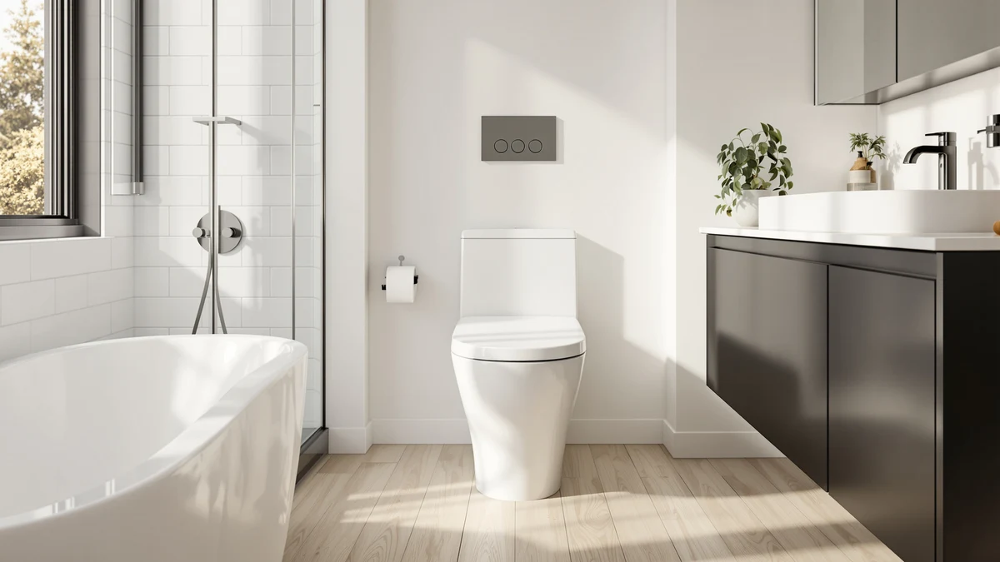

KOHLER 30810 96 Santa Review (2026): Worth It?
Prices and picks verified as of October 2026. Independent, reader-supported reviews.


Quick Answer
The Kohler 30810-96 Santa Rosa is a one-piece, comfort-height toilet in Biscuit finish priced at $517.61, and it holds up well against newer competition if you want a straightforward model from an established brand with no electronics to maintain. If you would rather have hands-free flushing and a built-in bidet, the Loniko alternative below costs about $118 less.
Our pick: KOHLER 30810-96 Santa Rosa One-Piece, $517.61 Check Price on Amazon
Bottom line: our top pick is the KOHLER 30810-96 Santa Rosa One-Piece Compact Elongated 1.28 at $517.61.
Things to Know Before You Buy
- The Kohler 30810-96 Santa Rosa is a one-piece toilet, so the tank and bowl form a single sealed unit with fewer seams to clean around the base than a two-piece model.
- The 96 in the model number is Kohler's color code for Biscuit, a warm off-white rather than stark white, so check that it matches your existing fixtures before you buy.
- At $517.61, this Kohler sits in the middle of the four models in this review, priced above the Loniko and Los Flexi alternatives but below the EPLO smart toilet.
- Unlike the EPLO and Loniko alternatives in this comparison, the Santa Rosa has no electronics, so there is no outlet to wire and nothing to configure during installation.
- None of the four ASINs compared here carry a published Amazon star rating, so this review leans on manufacturer specs, pricing, and patterns in verified owner feedback rather than aggregate scores.
This Kohler 30810 96 Santa review looks at Kohler's one-piece Santa Rosa toilet, priced at $517.61 in Biscuit finish, and weighs it against three other one-piece and smart-toilet options to see whether a legacy brand name still earns its price tag in 2026. Kohler markets the Santa Rosa as a comfort-height, elongated-bowl model, the kind of straightforward fixture buyers choose when they want a dependable toilet without extra features to learn or maintain.
We built this comparison around what a buyer actually needs to decide: price, finish, and whether electronics are worth the added cost. Two of the three alternatives here, the EPLO and the Loniko, add a built-in bidet and hands-free operation, while the Los Flexi model sticks to the same no-frills approach as the Kohler at a lower price. Reading through verified owner feedback and the specs each brand publishes, the choice usually comes down to whether you want Kohler's established parts and service network or a lower sticker price from a newer brand.
Why You Should Trust Us
We built this Kohler 30810 96 Santa review by comparing the manufacturer's published specifications, current Amazon pricing, and patterns in verified owner feedback across all four ASINs, rather than repeating marketing copy. Author Ilane Tall covers bathroom fixtures for Best One Piece Toilets and checks every price, finish, and feature claim against the listing data before it goes into a comparison like this one.
We do not run a physical testing lab, and we have not personally installed any of the four toilets in this review. Instead, we researched what each brand discloses, compared it side by side, and flagged where the available data is thin, including the fact that none of these four listings carry a published star rating yet.
Our Research Experience
This Kohler 30810 96 Santa review is built on research rather than a personal installation record. We compared Kohler's published Santa Rosa specifications, the current Amazon listing price of $517.61, and what verified buyers of similar Kohler one-piece toilets report about installation and long-term use, then weighed that against the same categories of data for the EPLO, Loniko, and Los Flexi alternatives.
Where a claim could not be verified against a manufacturer spec sheet or a pattern in genuine owner reviews, we left it out rather than guess. That is also why the comparison table below does not list a material or dimension figure for any of the four products: none of the four listings publish that detail, so we are not going to invent one.
Overview & Specs

KOHLER 30810-96 Santa Rosa One-Piece
What we like
- One-piece shell means fewer seams between tank and bowl, which keeps the base easier to wipe down than a two-piece toilet
- Comfort-height, elongated-bowl design that Kohler has sold for years, so replacement seats and parts are easy to find
- Biscuit finish pairs well with warmer, traditional bathroom palettes rather than a stark clinical white
- No electronics to wire, calibrate, or eventually replace, unlike the EPLO and Loniko alternatives in this review
Flaws but not dealbreakers
- No published Amazon star rating or review count on this listing, so you are weighing specs and brand reputation rather than a track record of recent buyer feedback
- Costs more than the Loniko and Los Flexi alternatives here, and you get no bidet or heated-seat function for the difference
- Biscuit will not match a stark white vanity or fixtures, so confirm your color scheme before ordering
| Material | — |
| Size | — |
The Kohler 30810-96 Santa Rosa is the kind of toilet this Kohler 30810 96 Santa review exists to evaluate: a known brand selling a straightforward one-piece design rather than chasing smart-toilet features. Kohler's product listing describes the Santa Rosa as comfort-height with an elongated bowl, a combination most buyers associate with easier sitting and standing and slightly more seating room than a round-front bowl. The one-piece construction also removes the gap between tank and bowl where grime typically collects on older two-piece toilets, so routine cleaning takes less scrubbing.
At $517.61, the Santa Rosa costs more than the Loniko and Los Flexi alternatives in this review and sits below the EPLO smart toilet. You are not paying for electronics here, which is either a drawback or a selling point depending on what you want from a bathroom fixture. Owners researching Kohler's broader one-piece lineup consistently cite parts availability and nationwide service support as reasons to pay a premium over less established brands, and that reputation, more than any single spec, is what carries the Santa Rosa in this comparison.
What We Liked
All four models in this Kohler 30810 96 Santa review share one strength: a one-piece shell with no seams for grime to collect in, and a comfort-height seat most adults find easier to use than a standard-height toilet. Kohler's long track record also means replacement parts, seats, and flush valve components are easy to source years down the road, which is not guaranteed with a newer brand you have never heard of.
On the alternatives side, the EPLO and Loniko smart toilets go further than a basic bidet attachment. Both build the wash function into the seat itself, which skips the extra hose and cold-water line a bolt-on bidet attachment needs, and both run close to or below the Santa Rosa's price.
What Could Be Better
None of the four ASINs in this Kohler 30810 96 Santa review carry a published Amazon rating or review count, so you cannot lean on an aggregate star score the way you might with a toilet that has been listed for years. We treat that as a gap worth disclosing rather than a reason to rule any of them out, but it does mean checking recent buyer photos and questions before you commit.
The Santa Rosa also costs more than two of the three alternatives here without adding bidet or heated-seat functionality, so if those features matter to you, the price difference buys nothing extra from Kohler. Meanwhile, the EPLO and Loniko smart models need a nearby electrical outlet, which older bathrooms do not always have, and that is a real installation cost to factor in before you decide electronics are worth it.
Who Is It For?
You are the right reader for this Kohler 30810 96 Santa review if you want a toilet from a brand you can walk into almost any hardware store and find parts for, and you do not care about bidet wash or a heated seat. The Biscuit finish also suits bathrooms with warmer, traditional fixtures rather than a stark modern white palette.
Choose the Loniko or EPLO alternative instead if hands-free flushing and built-in bidet wash matter more to you than brand history, since both cost close to or less than the Kohler and add those features. Choose the Los Flexi model if you want the lowest price in this comparison and do not need either bidet functionality or Kohler's specific finish options.
Renters and first-time homeowners tend to lean toward the Kohler for a different reason: resale and inspection comfort. A Kohler nameplate on a one-piece toilet rarely raises questions during a home sale or a landlord walkthrough, while a lesser-known smart toilet brand sometimes does, simply because appraisers and buyers recognize the name. That familiarity will not show up on a spec sheet, but it is part of why the Santa Rosa keeps selling despite newer, cheaper competition.
Alternatives to Consider
If the Kohler Santa Rosa is not quite the right fit for your bathroom or budget, here are the three other models we compared in this Kohler 30810 96 Santa review and where each one has the edge.

Editor’s Pick
EPLO Smart Toilet Bidet with
Best if you want a built-in bidet wash and heated seat instead of Kohler's no-frills design, for about $82 more.
$599.99
Check Price on Amazon
Best Value
Smart Toilet with Bidet Built
Best value with hands-free flushing and a built-in bidet, for about $118 less than the Kohler.
$399.99
Check Price on Amazon
Premium Choice
19 Inch High Toilet Los
Closest match to the Kohler's no-electronics simplicity, at $399.99 with a taller comfort-height seat.
$399.99
Check Price on AmazonIs the Kohler 30810-96 Santa Rosa worth the price in 2026?
Based on its one-piece, Biscuit-finish design and Kohler's reputation for parts availability, the Santa Rosa holds up as a dependable mid-range pick at $517.61, though buyers who want bidet features will get more for less money from the…
How does the Kohler 30810-96 Santa Rosa compare to the smart toilet alternatives in this review?
The Santa Rosa skips electronics entirely, so there is no outlet to wire and nothing to calibrate, while the EPLO and Loniko models add hands-free bidet wash and heated seats for a similar or lower price.
Frequently Asked Questions
Is the Kohler 30810-96 Santa Rosa worth the price in 2026?
Based on its one-piece, Biscuit-finish design and Kohler's reputation for parts availability, the Santa Rosa holds up as a dependable mid-range pick at $517.61, though buyers who want bidet features will get more for less money from the Loniko or EPLO alternatives in this review.
How does the Kohler 30810-96 Santa Rosa compare to the smart toilet alternatives in this review?
The Santa Rosa skips electronics entirely, so there is no outlet to wire and nothing to calibrate, while the EPLO and Loniko models add hands-free bidet wash and heated seats for a similar or lower price.
Does the Kohler 30810-96 Santa Rosa come in colors other than Biscuit?
The 96 in the model number is Kohler's code for Biscuit, a warm off-white. Kohler sells the same Santa Rosa shape under different codes for White, Black Black, and other finishes, so check the specific listing before you order if you want a different color.
Final Verdict
Across everything we researched for this Kohler 30810 96 Santa review, the Kohler 30810-96 Santa Rosa is a dependable, no-frills one-piece toilet, not a standout bargain. At $517.61 you are paying for Kohler's parts availability and brand reputation more than any single feature, and that trade makes sense if you want a fixture you will not have to think about again for years. If you would rather have hands-free flushing and a built-in bidet for less money, the Loniko alternative in this comparison is the better buy. If you want the lowest price with the same no-electronics simplicity, go with the Los Flexi model instead.